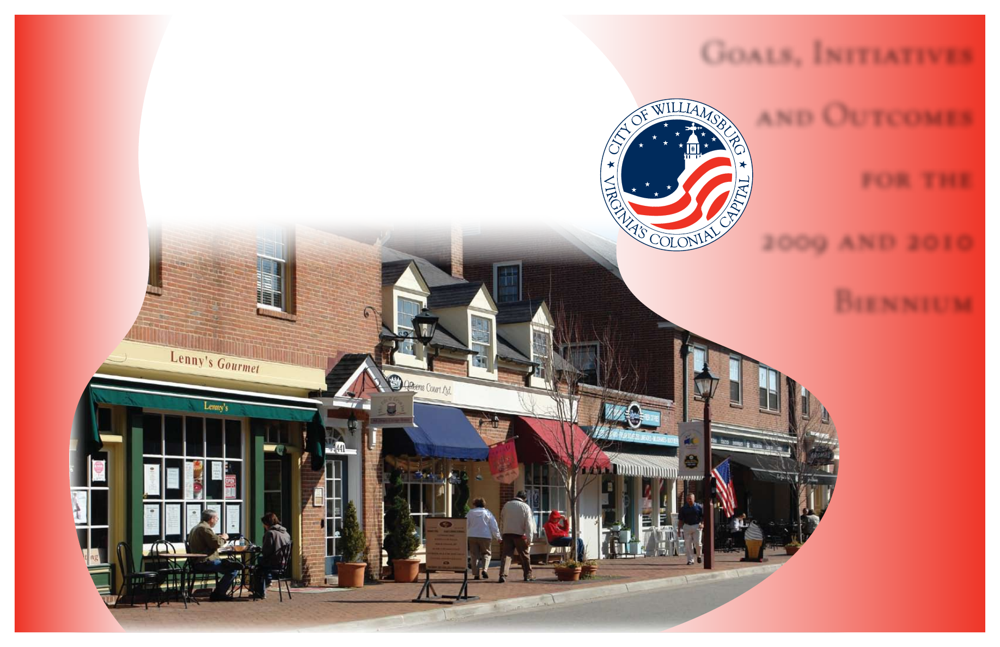
1699
Goals, Initiatives
and Outcomes
for the
2009 and 2010
Biennium
City of Williamsburg
Adopted November 13, 2008
Prince George Street in downtown Williamsburg
Prince George Street in downtown Williamsburg
www.williamsburgva.gov

Introduction
Williamsburg will become an evermore safe, beautiful, livable city of historic and
academic renown, served by a city government--cohesively led, financially
strong, always improving--in full partnership with the people who live, work and
visit here.
City of Williamsburg Vision
To advance the city’s vision, every two years the Williamsburg City Council identifies
new strategic objectives for city government. Biennial Goals, Initiatives and Outcomes
(GIOs) provide an expression of city priorities, as specific and measurable as possible,
covering a two year period. Longer term objectives are expressed in terms of what the
city hopes to accomplish in the next two years toward that objective.
GIOs are not intended to be a comprehensive list of all city services and activities.
Instead, they provide a concrete, coordinated expression of City Council's direction for
change and focus in the near future. In that way, they drive city government operating
budget and capital budget formation. The 2009/2010 Biennial Goals, Initiatives and
Outcomes, adopted in November 2008, guide budget decisions for two fiscal years, that
is for FY 10 and FY 11.
Under nine Goal statements 69 specific Initiatives are identified. In addition to the
Initiatives, Outcomes from the National Citizen Survey (NCS), and “Desired Outcomes”
and Observed Results,” provide performance metrics which help assess goal
achievement. Williamsburg participated in the NCS in May 2008. Reported here are
citizen ratings of “Good” or “Excellent” for 69 questions and whether those ratings were
“above,” “below,” or “similar” to the benchmark average of hundreds of other cities and
counties across the nation (cross referenced to the page in Williamsburg’s NCS
Report).
The Biennial GIOs are created in light of a variety of resources including the city's
Comprehensive Plan, Five Year Capital Improvement Program (CIP), and Economic
Development Strategic Plan; and with input from citizens, city staff, and volunteers.
Biennial goal statements directly align with the recently adopted 2006 Comprehensive
Plan goals. Initiative statements with a
symbol directly link to projects in the city’s
CIP.
Public comment is always welcomed. Go to
www.williamsburgva.gov
and click on
“Goals, Initiatives and Outcomes” on the home page.
____________________________
__________________________
Jeanne Zeidler, Mayor
Jackson C. Tuttle, City Manager
B - 2

Goal I
Character of the City
GOAL
Protect and enhance Williamsburg’s unique character—the Colonial Williamsburg
Historic Area, College of William and Mary, entrance corridors, urban
environment, neighborhoods, and open spaces.
INITIATIVES
Redevelopment Focus Areas
Encourage and assist in redevelopment of underused commercial properties and new
infill projects, during the biennium, especially on:
Richmond Road near College, and from Brooks Street to Ironbound Road.
Monticello Avenue in the vicinity of the W&M School of Education site.
Capitol Landing Road from Bypass Road to Merrimac Trail.
Second Street, Penniman Road and Page Street.
Corridor Beautification
Collaborate with James City and York Counties in a planning effort led by the Greater
Williamsburg Chamber and Tourism Alliance to enhance the Route 60 east corridor
from Busch Gardens into the city. Implement the city portions of the regional plan
during the biennium.
Complete planting of the Quarterpath Road buffer between The Village at Quarterpath
and Quarterpath Park.
In conjunction with redevelopment projects in the Scotland/Prince George Street
corridor, improve sidewalks, lighting and landscaping from the Deli area to Boundary
Street.
Working with the Beautification Advisory Committee, better define city landscape and
planting standards, themes and strategies to enhance the beauty of Williamsburg’s
corridors and public spaces.
Underground Wiring
Complete underground wiring on Page Street from the railroad overpass to the Colonial
Parkway overpass by July 2011, subject to funding in the Capital Improvement Plan and
Dominion Virginia Power participation.
B - 3
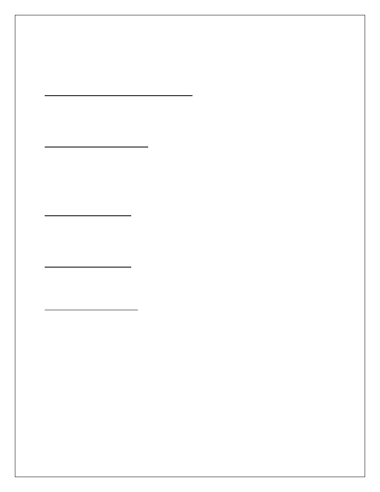
Complete underground wiring of a portion of Berkeley Lane if authorized by a Special
Assessment District with 50% homeowner participation.
Work with Dominion Virginia Power and developers to underground utilities on
Quarterpath Road between Route 199 and Redoubt Park.
Open Space and Woodlands Preservation
Actively pursue acquisition of open space and land conservation, either through
purchase of ownership or development rights, both in the City and in Waller Mill
Reservoir watershed, whenever availability, price and budget capacity align.
City Square Municipal Center
Begin construction of the Municipal Building expansion and renovation project, and
complete the Emergency Operations Center project, during the biennium per the Five
Year Capital Improvement Plan. Refurbish the Transportation Center and Community
Building to address wear and tear on those heavily used buildings. Continue planning
for replacement of the Stryker Building after the biennium.
Historic Building Survey
Update the City’s original 1992 survey of the Historic Building Survey for the
Architectural Preservation District by end of 2009, to add buildings which are older than
50 years.
Heritage Tree Protection
Identify and further protect heritage trees located on city property with program in place
during the biennium.
Wayfinding Improvements
Assess effectiveness of the Historic Triangle Wayfinding sign system after two years of
service, and incorporate downtown parking and tour bus directional signs into the
wayfinding system, to be completed by the end of 2009.
B - 4
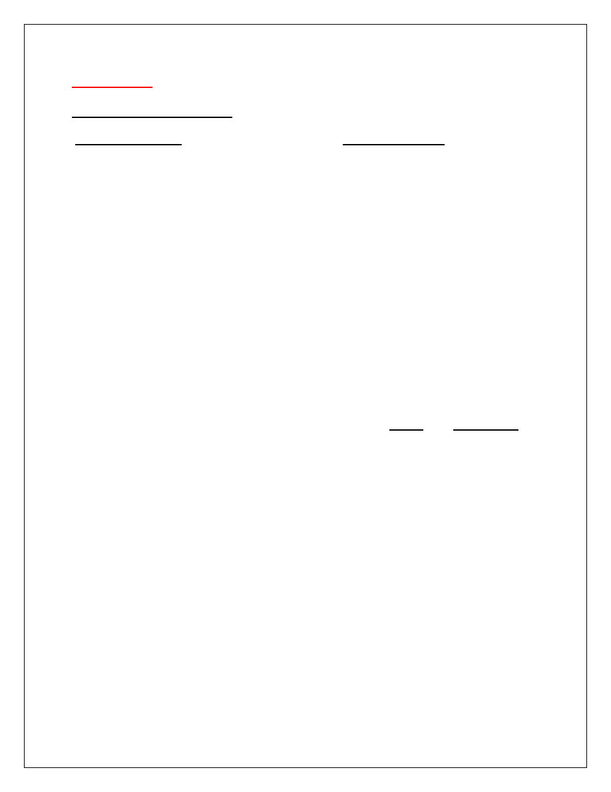
OUTCOMES
KEY OUTCOME MEASURES
Desired Outcomes
Observed Results
Open space preserved as the largest single
land use category in the City.
In FY 09, there are 2,275 acres
(39.5% of total City land area)
reserved as open space either as
public parks and parkways, College
Woods, CWF golf courses or sensitive
environmental no-build areas.
* Source: City Planning Department
Overhead power lines replaced with
underground lines throughout the City,
especially on entrance corridors, at an average
rate exceeding 1,000 feet per year since 1980.
In FY 08 wires were placed
underground on the northerly 3,000
feet of Quarterpath Road. Since 1982,
32,250 (6.1 miles) have been placed
underground by City action (an
average 1,240 feet per year).
* Source: City Public Works & Utilities Dept.
The visual and historic character of the City
protected through an active and effective
architectural review program.
48% of City land is subject to the
Architectural Review Board. ARB total
cases and percent approval:
Cases % Approved
FY 06 - 169 98%
FY 07 - 141 97%
FY 08 - 137 97%
* Source: City Planning Department
Redevelopment, infill, or new development
projects continue to refresh the City as indicated
by building permits valued at least $50 million
annually issued.
Building permits issued and total
value:
FY 06 – 252 permits, $56.4 mil
FY 07 – 291 permits, $43.7 mil
FY 08 – 268 permits, $55.4 mil
*Source: City Codes Compliance Division
B - 5

CITIZEN RATINGS OF OUTCOMES FROM 2008 NATIONAL CITIZEN SURVEY
Measure
Percent Rated
Compared to
“Good”
National
or “Excellent
Benchmark
Overall Quality of Life in Williamsburg (p.7)
78%
above
Williamsburg as a place to live (p.7)
85%
above
Overall quality of new development in
56%
similar
Williamsburg (p.14)
Overall appearance of Williamsburg (p.14)
88%
above
Cleanliness of Williamsburg (p.24)
91%
above
Quality of overall natural environment (p.24)
76%
above
Preservation of natural areas (p.24)
58%
similar
B - 6

Goal II
Economic Vitality
GOAL
Increase employment opportunities, income, business success, and city
revenues by supporting, promoting, and expanding the city’s tourism and
education base and other development and redevelopment opportunities.
INITIATIVES
Tourism Promotion
Continue to invest heavily in tourism promotion through the Colonial Williamsburg
Foundation, the Greater Williamsburg Chamber and Tourism Alliance, and the
Williamsburg Area Destination Marketing Committee to increase visitation to
Williamsburg.
Economic Development Incentives
Assess the potential in Williamsburg for business incentive programs based on the
State legislation that allows local Technology Zones, Redevelopment Real Estate Tax
Exemptions, Tourism Zones, and Economic Revitalization Zones. Adopt appropriate
ordinances during the biennium, with implementation and marketing to follow, for those
programs deemed to be effective.
Student Oriented Retail
Support the effort of the College of William and Mary, the Williamsburg Redevelopment
and Housing Authority, and private developers to redevelop properties for mixed use
student-oriented retail close to the campus. This effort includes the William and Mary
Foundation’s property on Richmond Road, the property at the corner of Armistead and
Prince George Streets, and the Williamsburg Redevelopment and Housing Authority
property on Scotland Street.
Expansion and Recruitment of Targeted Businesses
Pursue opportunities in targeted business sectors - such as, creative enterprises;
regional or branch headquarters, research and technology, professional services, and
nonprofits – through marketing and development assistance.
B - 7

Southeast Quadrant
Support Riverside Hospital’s application for a Certificate of Public Need to construct
Doctor’s Hospital of Williamsburg, and facilitate the development of a high quality,
sustainable new neighborhood and community in the Quarterpath/Riverside sector of
the city.
Future of State Hospital Property
Collaborate with James City County, the Virginia Department of Mental Health, Mental
Retardation and Substance Abuse Services, the College of William and Mary, and
others in implementing the 2008 Conceptual Plan for Eastern State Hospital property,
and adjoining areas within the city limits, especially the College’s Dillard Complex.
“Virginia Green” Certification for Tourism Businesses
Assist businesses with the Virginia Tourism Corporation’s “Virginia Green” certification
and promote the businesses as they become certified.
OUTCOMES
KEY OUTCOME MEASURES
Desired Outcomes
Observed Results
The City advanced as an exceptional tourism
destination by supporting the Hospitality
Industry’s goal of 900,000 hotel room nights
sold each year.
Room nights sold in the city:
FY 06 - 797,832
FY 07 - 836,360
FY 08 - 812,887
* Source: City Finance Department
The City’s position as a retail center of the
region maintained with per capita retail sales
growing annually.
Per capita retail sales in the city:
FY 06 – $23,070
FY 07 – $27,953
FY 08 – $31,534
* Source: Virginia Department of Taxation
Economic opportunity for the citizens
enhanced with per capita personal income
growing annually.
Per capita personal income in the
city:
FY 04 – $40,708
FY 05 – $41,922
FY 06 – $42,923
* Source: US Department of Commerce,
Bureau of Economic Analysis
B - 8
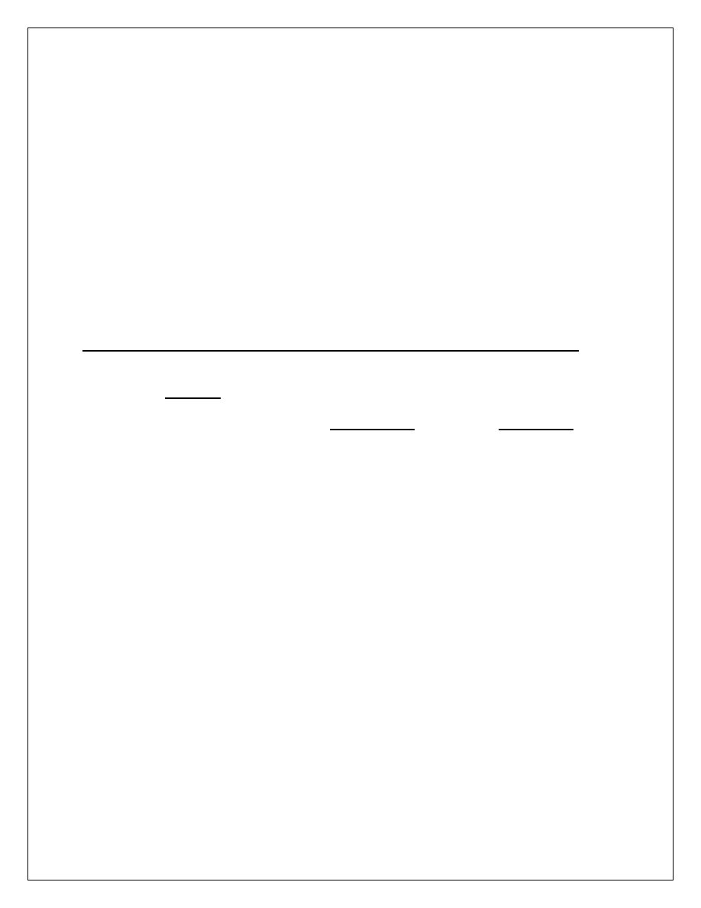
A balanced tax base sustained by growing
the percent of the taxable land book
consisting of commercial property.
The percent of taxable City
commercial property on the City’s
Land Book:
FY 06 – 35%
FY 07 – 34%
FY 08 – 37%
* Source: City Assessor
The City’s position as a regional employment
center maintained by growing the total
number of in-city jobs across all industries.
The number of jobs based in the city:
FY 05 – 17,043
FY 06 – 16,865
FY 07 – 16,180
* Source: Virginia Employment Commission
CITIZEN RATINGS OF OUTCOMES FROM 2008 NATIONAL CITIZEN SURVEY
Measure
Percent Rated
Compared to
“Good”
National
or “Excellent
Benchmark
Employment opportunities (p.17)
40%
above
Shopping opportunities (p.17)
76%
above
Williamsburg as a place to work (p.17)
53%
similar
Overall quality of business and service
65%
not available
establishments in Williamsburg (p.17)
Economic development services (p.18)
48%
above
B - 9
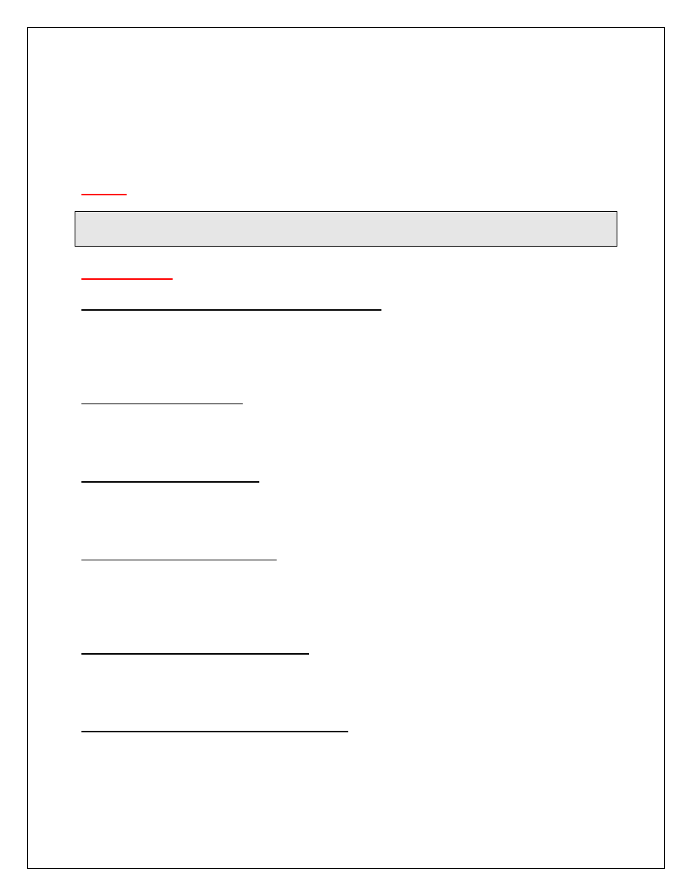
Goal III
Neighborhoods and Housing
GOAL
Protect and enhance the quality of the city’s residential neighborhoods, and
encourage the provision of affordable housing for city residents and workers.
INITIATIVES
Affordable Housing for Workforce and Seniors
Work with regional and private sector partners to identify and begin at least one new
affordable workforce housing or senior housing project in the city or region during the
biennium.
New City Neighborhoods
Incorporate new city neighborhoods - notably High Street apartments and townhouses,
and The Village at Quarterpath - into the city’s neighborhood service system.
Electrical Reliability Project
Partner with Dominion Virginia Power to implement an electrical underground reliability
project in the Indian Springs area to be completed by mid-2009.
Neighborhood Traffic Calming
Implement traffic calming recommendations included in the Skipwith Farms/Longhill
Woods traffic study with concurrence from the neighborhood residents, and engage
other neighborhoods with traffic calming strategies.
Neighborhood Guide Enhancement
Create an online, interactive version of the city’s Neighborhood Guide for the city’s
website by summer 2009.
Neighborhood Landscape Grant Program
Implement the Beautification Advisory Committee’s Landscape Grant Program, which
will offer annual grant funds to City neighborhoods for landscaping work in common
areas.
B - 10
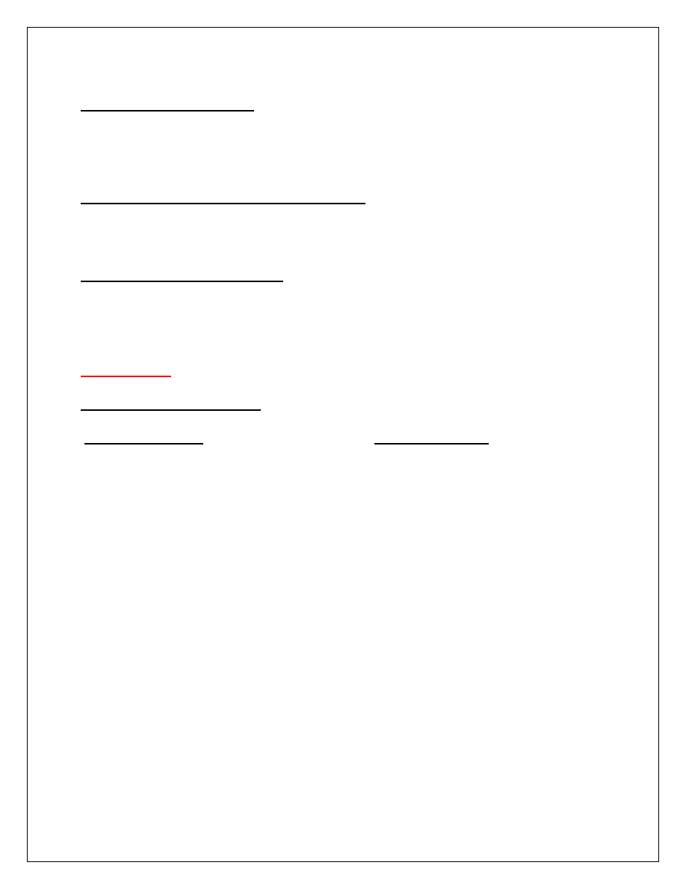
Affordable Housing Zoning
Explore the use of affordable dwelling unit zoning or proffers to increase the supply of
new workforce housing in Williamsburg, particularly in the areas of prospective
development in the southeast quadrant of the city.
Zoning Regulations on Unrelated Occupants
Devise strategies to improve compliance with zoning regulations governing the number
of unrelated persons in a dwelling unit.
Student/Resident Relationships
Pursue multiple strategies to better communicate and enhance relationships between
the city government, year round residents and students of the College of William and
Mary.
OUTCOMES
KEY OUTCOME MEASURES
Desired Outcomes
Observed Results
The stability and care of neighborhoods
reinforced by growing toward the
Comprehensive Plan’s goal of 50% of the
City’s housing units owner-occupied.
44.3% of the City’s occupied housing
units in the 2000 Census were owner-
occupied.
* Source: U.S. Census
Housing stock and neighborhood quality
preserved by an active property maintenance
enforcement program with a 95% compliance
rate.
Number of property maintenance
inspections and percent brought into
compliance:
FY 06 – 752 inspections, 92%
compliance
FY 07 – 1163 inspections, 97%
compliance
FY 08 – 1310 inspections, 96%
compliance
* Source: City Codes Compliance Division
95% of property maintenance cases
brought into voluntary compliance without
resorting to court action.
Number of cases and percent brought
into voluntary compliance without
resorting to court action.
FY 06 – 311 cases, 96% compliance
FY 07 – 423 cases, 97% compliance
FY 08 – 446 cases, 96% compliance
* Source: City Codes Compliance Division
B - 11

95% of rental inspection program cases
brought into voluntary compliance without
resorting to court action.
Number of cases and percent brought
into voluntary compliance without
resorting to court action.
FY 06 – 38 cases, 84% compliance
FY 07 – 37 cases, 97% compliance
FY 08 – 145 cases, 100% compliance
* Source: City Codes Compliance Division
CITIZEN RATINGS OF OUTCOMES FROM 2008 NATIONAL CITIZEN SURVEY
Measure
Percent Rated
Compared to
“Good”
National
or “Excellent
Benchmark
Quality of your neighborhood as a place
78%
similar
to live (p.7)
Sense of community (p.32)
64%
above
Openness and acceptance of the
51%
below
community towards people of diverse
backgrounds (p.32)
Availability of affordable quality housing (p.12) 20%
below
Variety of housing options (p.12)
36%
below
B - 12

Goal IV
Transportation
GOAL
Provide an effective transportation system which is compatible with the future
land use plan; serves pedestrians, bicyclists and motorists; and promotes the
expanded use of transit and rail.
INITIATIVES
Ironbound Road Improvements
Complete the study phase for the Ironbound Road corridor from Richmond Road to
Longhill Connector Road, to include street and intersection improvements, as well as
improvements to pedestrian and bicycle facilities.
Traffic Signal Installations
Install traffic signals on Richmond Road and Ironbound Road as part of the High Street
development. Per timing dictated by development and by the Capital Improvement Plan
schedule, install the Waltz Farm Drive signal at Richmond Road, the Second Street
signal at Parkway Drive, and the Route 60 East signal at Quarterpath Road, as VDOT
Urban projects.
Williamsburg Area Transport
Work with Williamsburg Area Transport to increase headways on key City bus routes
from one hour to thirty minutes.
Begin a retail trolley loop service, managed by Williamsburg Area Transport, which
connects Merchants Square, New Town and High Street by May 2009.
Transportation Center Renovation
Refurbish and refresh the Williamsburg Transportation Center, which has enjoyed
heavy use since its restoration in 2002.
Sidewalk Improvements
Install sidewalks and other enhancements per the Capital Improvement Plan, and with
particular emphasis on the Nassau Street tour bus stop and the Route 199 pedestrian
connection from Holly Hills Carriage Homes to the City’s sidewalk system on
Jamestown Road.
B - 13

College and Community Connections
Coordinate with William and Mary the planning and construction of pedestrian and
bicycle access from the main campus to the proposed School of Education and
Treyburn Drive (High Street). Pedestrian access along Compton Drive and Monticello
Avenue adjacent to College Woods, including signalized crossing at Ironbound Road,
need to be funded and executed by VDOT.
Bicycle Friendly Community
Seek certification as a Bicycle Friendly Community from the League of American
Bicyclists.
OUTCOMES
KEY OUTCOME MEASURES
Desired Outcomes
Observed Results
Ridership of Williamsburg Area Transport
steadily increasing.
Ridership
FY 06 - 610,360
FY 07 - 670,939
FY 08 - 770,405
* Source: Williamsburg Area Transport
Ridership on Amtrak passenger rail from the
Williamsburg station steadily increasing.
Total ridership for Amtrak from the
Williamsburg station
FY 05 - 37,450
FY 06 - 37,957
FY 07 - 41,941
* Source: Amtrak
The City’s portion of the Regional Bikeway
Plan accomplished, which calls for 27.6 miles
bike lanes, bike paths, and other facilities.
In 2008 there are 14.3 miles of bike
paths, and other facilities in the city
(52% of the desired total).
* Source: City Planning Department
Safety on public streets improved by reducing
the number of accidents with injuries from
year to year.
Accidents with injuries within city limits
FY 06 - 56
FY 07 - 68
FY 08 – 72
* Source: Williamsburg Police Department
B - 14

CITIZEN RATINGS OF OUTCOMES FROM 2008 NATIONAL CITIZEN SURVEY
Measure
Percent Rated
Compared to
“Good”
National
or “Excellent
Benchmark
Ease of car travel in Williamsburg (p.9)
68%
above
Ease of bus travel in Williamsburg (p.9)
43%
similar
Ease of bicycle travel in Williamsburg (p.9)
52%
similar
Ease of walking in Williamsburg (p.9)
67%
above
Traffic flow on major streets (p.9)
53%
not available
Street repair (p.10)
61%
above
Street cleaning (p.10)
75%
above
Street lighting (p.10)
67%
above
Snow removal (p.10)
71%
above
Sidewalk maintenance (p.10)
66%
above
Amount of public parking (p.10)
44%
not available
B - 15

Goal V
Public Safety
GOAL
Secure an ever safer community by enabling
police, fire, emergency management
and judicial operations to protect and serve city residents, visitors, businesses
and historical assets.
INITIATIVES
Storm Ready Community
Complete the National Oceanic and Atmospheric Administration (NOAA) “Storm Ready
Community” certification process by end of 2008 to better communicate with citizens
before, during, and after severe weather.
Neighborhood Response Teams
Conduct refresher training by summer 2009 for the existing eight Neighborhood
Response Teams (Citizen Emergency Response Teams – CERT program) to better
serve the needs of Williamsburg residents during emergencies.
Add a College of William and Mary campus response team as another city
“neighborhood” in the CERT program.
Emergency Medical Response
Provide faster response to emergency medical calls by the end of 2009, by training and
equipping all uniformed police officers in basic first aid. As first responders with the
fastest response time, police will assist until Fire/EMT responders arrive on scene.
Public Safety Physical Fitness
Promote the physical readiness of public safety personnel by establishing clear fitness
and weight management standards, linked to fitness programs and to individual
performance evaluation.
Public Safety Laptops
Install laptops in all public safety vehicles to allow for remote connectivity to Police
systems, Fire system and GIS systems, to be completed by June 2010.
B - 16

Emergency Operations Center
Complete the new Emergency Operations Center/ Fire Department Administrative
building with improved technology to be operational by summer 2009.
Ironbound Road Fire Station
Plan for a fire department station per the Five Year Capital Improvement Program to
better serve the northern section of the city.
OUTCOMES
KEY OUTCOME MEASURES
Desired Outcomes
Observed Results
Part I crimes cleared at a rate exceeding that of
the national average. (Part I crimes are major
crimes such as: murder, rape, robbery, assault,
burglary, larceny, and auto theft.)
Clearance rate for Part I crimes:
Williamsburg National
FY 06 – 31.2% 32.5%
FY 07 – 58.5% 31.9%
FY 08 - 45.9% 32.1%
* Sources: Williamsburg Police Department
and Federal Bureau of Investigations
Police response to calls for service average
under 2 minutes, from dispatch to arrival on
scene.
Average police response time
FY 06 – 1.4 minutes
FY 07 – 1.5 minutes
FY 08 – 1.3 minutes
* Source: Williamsburg Police Department
Firefighter and apparatus on scene ready for
action in under 8 minutes in 90% of cases, from
dispatch to arrival.
Fire response time in 90% of cases
was under:
90% under: Avg of all cases:
FY 06 – 7.0 minutes 5.0 minutes
FY 07 – 7.7 minutes 6.0 minutes
FY 08 - 7.3 minutes 5.4 minutes
* Source: Williamsburg Fire Department
Emergency Medical (EMS) response with
Advanced Life Support (ALS) under 8 minutes
in 90% of cases, from dispatch to arrival.
ALS response time in 90% of cases
was under:
90% under: Avg. of all cases:
FY 06 – 7.9 minutes 5.6 minutes
FY 07 – 8.2 minutes 5.8 minutes
FY 08 - 8.2 minutes 5.9 minutes
* Source: Williamsburg Fire Department
B - 17
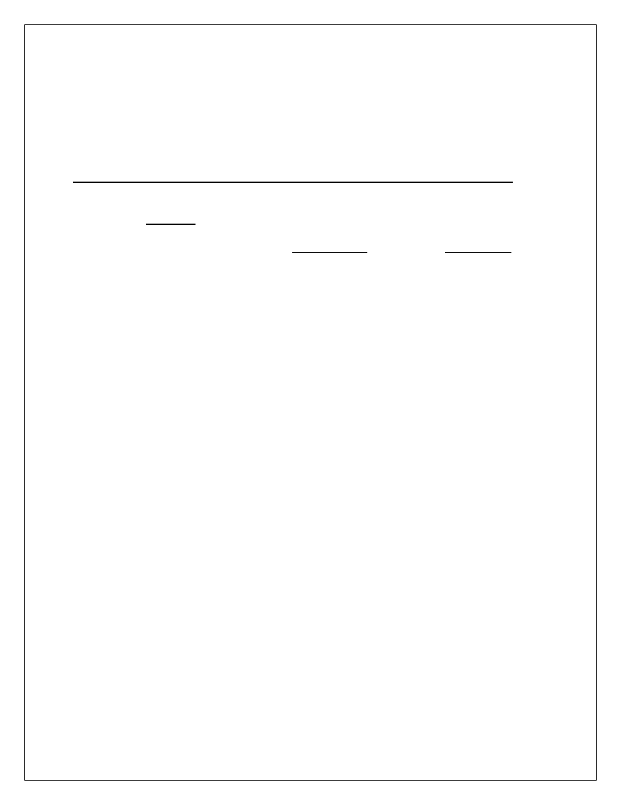
Property loss due to fire of less than .5% of total
protected value annually.
Property loss due to fire was:
FY 06 – $99,970 (.14% loss ratio)
FY 07 – $1,293,420 (.17% loss ratio)
FY 08 - $197,250 (.21% loss ratio)
* Source: Williamsburg Fire Department
CITIZEN RATINGS OF OUTCOMES FROM 2008 NATIONAL CITIZEN SURVEY
Measure
Percent Rated
Compared to
“Good”
National
or “Excellent
Benchmark
Safety in Williamsburg’s downtown area 78%/97%
above
after dark/during the day (p.20)
Safety in your neighborhood after dark/ 77%/95%
above
during the day (p.20)
Safety from property crimes (p.20)
73%
above
Safety from violent crimes (p.20)
80%
above
Police services (p.23)
81%
above
Fire services (p.23)
94%
above
EMS services (p.23
92%
above
Crime prevention services (p.23)
80%
above
Fire prevention and education services (p.23) 80%
above
Traffic enforcement services (p.23)
64%
similar
Emergency preparedness (p.23)
69%
above
B - 18

Goal VI
Education and Human Services
GOAL
Seek opportunities and implement programs that address the educational,
workforce training, health, social, and economic needs and expectations
of city
residents and workers.
INITIATIVES
Youth Achievement
Create a youth leadership council as one of the city’s youth school year achievement
activities occurring during the school year, by September 2010.
Implement a ballroom dancing program by April 2009, in addition to continuing Tae
Kwan Do, for young people who participate in the city’s youth achievement program to
build self esteem and self confidence.
Youth Career Development
Assist with the development of a regional “Career Café” during the biennium that will
link high schools students with career and vocational training opportunities.
Aging in Place Assistance
Create a senior care team by June 2009 comprised of adult services staff, health care
professionals and volunteers to assist seniors allowing them to age at home.
Workforce Development Assistance
Create a workforce self-sufficiency team by the end of 2008, to be located at the
Williamsburg Workforce Development Center, to address the economic and child care
needs for families.
City Hospital
Continue to support a State Certificate of Public Need for construction of Doctors
Hospital of Williamsburg.
WJCC 9
th
Elementary and 4
th
Middle Schools
Support and fund, as required in the Williamsburg/James City County joint school
agreement, the construction of the ninth elementary and fourth middle schools.
B - 19
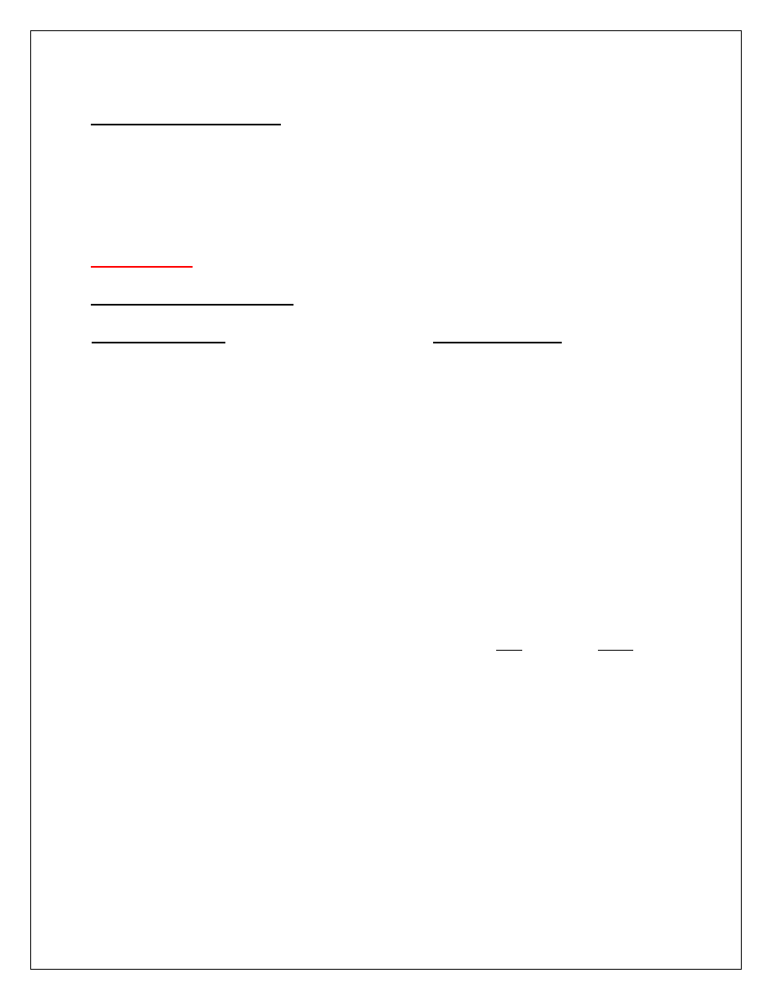
Homelessness Task Force
Provide regional leadership to fully establish and maintain the Historic Triangle
Homelessness Prevention Task Force, in cooperation with the Peninsula Commission
on Homelessness, to provide accessible, affordable, timely shelter and community
support services to those currently or at risk of being homeless.
OUTCOMES
KEY OUTCOME MEASURES
Desired Outcomes
Observed Results
On time graduation rate for W/JCC students of
85%. (Will attempt to obtain data for city
students only in future updates.)
W/JCC school system on-time
graduation rate:
2005-06 – 80%
2006-07 – 78%
2007-08 – 80%
* Source: W/JCC Schools
3
rd
grade reading score on the SOL for city
students of 95%, as a key indicator of future
academic success.
3
rd
grade reading passing rate for the
SOLs at Matthew Whaley Elementary
School:
FY 06 – 81%
FY 07 – 89%
FY 08 – 90%
* Source: W/JCC Schools
Exceed statewide success rate of VIEW (VA
Incentive for Employment Not Welfare) program
participants at finding jobs.
% of participants finding employment:
City State
FY 06 – 76% 72%
FY 07 – 88% 67%
FY 08 – 79% 58%
* Source: Virginia Department of Social
Services
B - 20

CITIZEN RATINGS OF OUTCOMES FROM 2008 NATIONAL CITIZEN SURVEY
Measure
Percent Rated
Compared to
“Good”
National
or “Excellent
Benchmark
Educational opportunities (p.28)
78%
above
Public Schools (p.29)
67%
similar
Availability of affordable quality health care
50%
similar
(p.30)
Availability of preventive health services
52%
above
(p.30)
Health and wellness services (p.31)
65%
above
Availability of affordable quality child care
25%
below
(p.32)
Services to seniors (p.33)
75%
above
Services to youth (p.33)
50%
similar
Services to low-income people (p.33)
37%
below
B - 21

Goal VII
Recreation and Culture
GOAL
Add to the quality and availability of recreational and cultural facilities and
programming to meet the needs and expectations
of city residents and visitors.
INITIATIVES
Williamsburg Visual Arts Center Lease
Execute an option to lease with This Century Art Gallery to build a regional visual arts
center at Papermill Creek during the biennium.
Civil War Sesquicentennial
Establish Williamsburg’s Civil War Sesquicentennial committee to work with Virginia
Statewide Commemoration of the 150
th
anniversary of the war between the states.
Quarterpath Park Improvements
Replace existing ballfield lights on fields #1 and #2 at Quarterpath Park with a more
energy efficient outdoor lighting system to be operational by mid-2011.
Kiwanis Park Reconstruction
Complete Phase II reconstruction of Kiwanis Park (field #2 and #3) by spring 2009 to
serve as the region’s premier youth softball facility.
Curation of City Historical Items
Appoint in 2009 a city curation work group of citizen volunteers and city staff to research
and inventory city historical items.
Country Road Preservation
Work with Colonial Williamsburg Foundation and James City County to preserve the
“Country Road” between South England Street in Williamsburg and Mounts Bay in
James City County as a public recreational hiking/biking trail.
B - 22
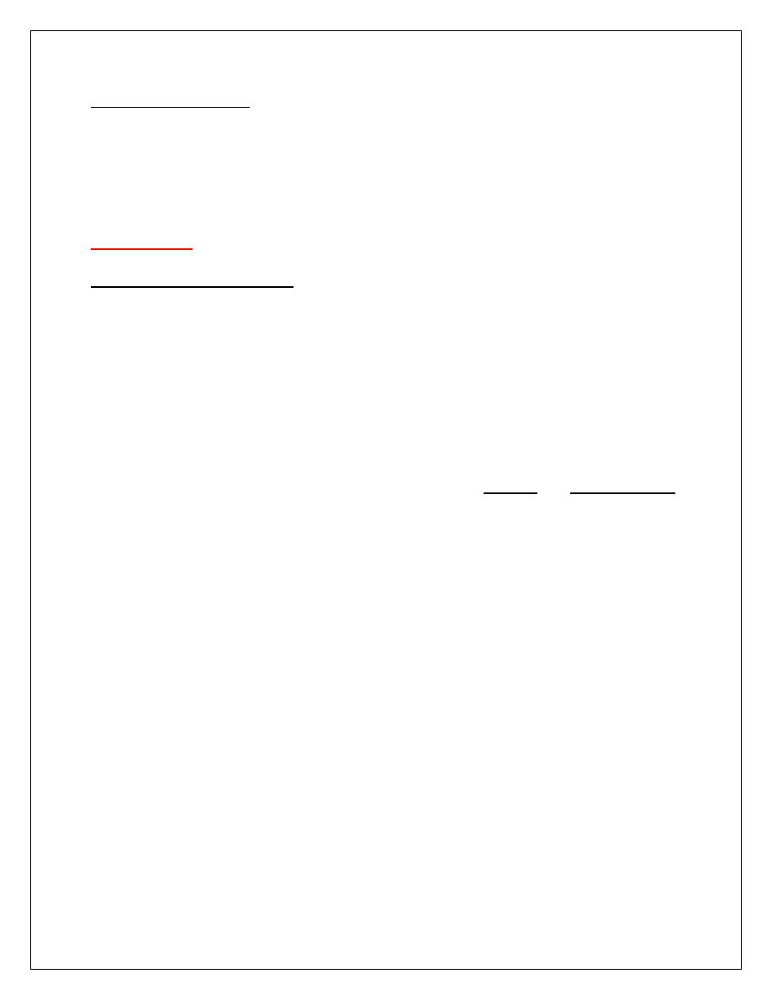
Regional Art Festivals
Support the Virginia Arts Festival’s goal to expand Festival Williamsburg in 2010.
Support the Greater Williamsburg Chamber and Tourism Alliance’s efforts to host a
regional Plein Air Art Festival in 2010.
OUTCOMES
KEY OUTCOME MEASURES
Desired Outcomes
Observed Results
Active and passive city parks exceed state
DCR standard of 10 acres per 1000
population by 150%.
As of FY 08, there are 208 acres of
improved active and passive park
land in the City (15.7 acres/1,000
population).
* Source: City Planning Department
An active library card held by one half of the
city’s population (including William and Mary
students).
Number of library cards issued to
Williamsburg residents:
Number % of population
FY 08 6399 48%
*
Source: Williamsburg Regional Library
Williamsburg Farmers’ Market annual vendor
sales at least $750,000.
Total vendor sales per season:
2005 – $556,342 ($13 per customer)
2006 – $656,086 ($18 per customer)
2007 - $757,362 ($18 per customer)
To increase attendance at the Virginia Arts
Festival’s annual “Festival Williamsburg” event
each year.
Attendance at the annual event was:
2006 – 3,857 plus 269 students
2007 – 3,367 plus 275 students
2008 – 3,335 plus 2,090 students
* Source: Virginia Arts Festival
B - 23

CITIZEN RATINGS OF OUTCOMES FROM 2008 NATIONAL CITIZEN SURVEY
Measure
Percent Rated
Compared to
“Good”
National
or “Excellent
Benchmark
Recreational opportunities (p.26)
73%
above
City Parks (p.27)
87%
above
Recreation programs and classes (p.27)
74%
above
Recreation centers and facilities (p.27)
74%
above
Public library services (p.29)
91%
above
Opportunities to attend cultural activities
63%
above
(p.28)
Availability of paths and walking trails (p.9)
54%
not available
B - 24

Goal VIII
Environmental Sustainability
GOAL
Build an evermore sustainable and healthy city pursuing multiple strategies for
conservation and restoration, and providing essential environmental services
related to drinking water, waste water, stormwater and solid waste.
INITIATIVES
Sustainability Policies and Practices
Undertake a number of programs designed to continually improve environmental
practices of city government and of the community at large:
Complete the first Virginia Municipal League’s Green Government certification
process by October 2008, and complete annual recertifications in 2009 and
beyond.
Implement the city’s overall Sustainability Policy as adopted by City Council in
September 2008 to provide direction for sustainability policies and practices.
Implement the city’s Energy Improvement Plan developed as part of the city’s
Green Government certification by the Virginia Municipal League.
Implement a revised paper recycling program for the city organization and
activate paper saving printing practices for all city offices.
Add hybrid, all electric and other fuel efficient vehicles to the city’s municipal fleet
and investigate the opportunity to incorporate alternative fuel vehicles during the
biennium.
Implement an employee incentive program to encourage employees to walk,
bike, car pool, or use transit to work.
Conduct an online community education program on sustainability practices by
December 2008.
Discover ways to partner with the Colonial Williamsburg Foundation and the
College of William and Mary on community sustainability efforts and programs.
Submit and receive the E
4
Certification from the Virginia Department of
Environmental Quality (city currently E
3
Certified).
B - 25
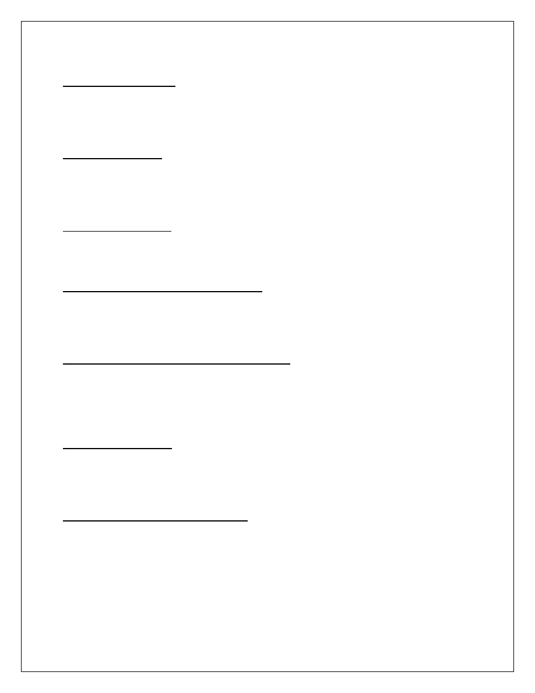
Drinking Water Supply
Complete negotiations by the end of 2008 with Newport News Waterworks to reserve
additional raw water capacity from Waterworks to ensure Williamsburg indefinitely has
an adequate supply of drinking water, even in times of severe drought.
Water Conservation
Promote water conservation in partnership with HRWET, the regional education
committee created to promote water conservation. Provide information and
conservation kits to citizens at city offices and community outreach events.
Watershed Protection
Pursue opportunities to purchase property or development rights in the Waller Mill
Reservoir watershed to further protect the City’s drinking water.
Stormwater Management Improvements
Complete erosion control activities on the Route 143 embankment and implement other
stormwater improvements per the City’s Capital Improvement Plan and Stormwater
Management Plan.
Sanitary Sewer Evaluation and Improvements
Comply with the State consent order for the region focusing on eliminating sanitary
sewer overflows. Create first annual report and begin development of a MOM
(Maintenance, Operation, Management) document, identifying SSES basins and
continuing flow monitoring.
Drinking Water Safety
Replace temporary pilot project using chlorine dioxide for THM control with a permanent
installation. Upgrade other chemical feed equipment in conjunction with chlorine
dioxide initiative.
Solid Waste Collection Pilot Program
Initiate a pilot program to make changes to the city’s twice weekly, backyard, no fee
residential refuse collection program in order to lower costs and reduce truck emissions.
B - 26

OUTCOMES
KEY OUTCOME MEASURES
Desired Outcomes
Observed Results
Recycle 37.5% of solid waste stream (150%
of Virginia’s 25% recycling goal).
Waste stream recycled:
FY 05 – 33% (132% of state goal)
FY 06 – 38% (152% of state goal)
FY 07 – 35% (140% of state goal)
* Source: City Public Works & Utilities Dept.
Drinking water conserved by reducing daily
household equivalent consumption below 165
gallon per day.
Water consumed in gallons per day
per equivalent household
connections:
FY 05 – 175 GPD
FY 06 – 165 GPD
FY 07 – 164 GPD
* Source: City Public Works & Utilities Dept.
DNR Certification of Compliance obtained
with the Chesapeake Bay Protection Act.
In the most recent compliance review
(2005) the city was named an
“outstanding local partner” in
Chesbay protection.
* Source: Chesapeake Bay Local Assistance
Dept.
DNR Certification of Compliance obtained with
VA Erosion and Sediment Control Law (70 of
100 points needed for certification).
In the most recent Compliance
Review (2007) the city scored an
average of 93.75 in four program
areas earning certification.
* Source: Dept. of Conservation and
Recreation
B - 27

CITIZEN RATINGS OF OUTCOMES FROM 2008 NATIONAL CITIZEN SURVEY
Measure
Percent Rated
Compared to
“Good”
National
or “Excellent
Benchmark
Sewer services (p.25)
86%
above
Drinking water (p.25)
64%
above
Storm drainage (p.25)
67%
above
Yard waste pick-up (p.25)
80%
above
Recycling (p.25)
74%
similar
Garbage collection (p.25)
91%
above
B - 28

Goal
IX
City Organizational Leadership
GOAL
Continuously improve the performance of the city government organization for
greater fiscal strength, effectiveness in outcomes, and engagement with
citizens.
INITIATIVES
Biennial Strategic Planning Process
Determine the City Council’s biennial Goals, Initiatives, and Outcomes for Fiscal 2010
and 2011 using an open participatory process including an online public forum pilot
program to enable citizen input and dialogue.
City Charter Amendments
Request from the General Assembly during the 2009 session that the City Charter be
amended to better reflect the City’s current organizational structure and management
practices.
National Citizen Survey
Conduct Williamsburg’s second National Citizens Survey in May 2010.
High Performance Organization (HPO) Change Model
Conduct a third and fourth HPO class in 2009 and 2010, and continue to build the
capacity of the city organization for high performance.
Performance Measurement Program
Expand citywide data collection and reporting capabilities, and develop performance
measurement software module in order to better use the Virginia Performance
Consortium and the National Citizens Survey.
Public Information and Communications
Continue to reinforce the city’s brand by enhancing its publications, and expanding its
online presence and use of WMSBG Channel 48 during the biennium.
Employee Survey
Conduct an Employee Survey and develop an action plan to address survey results by
end of 2009.
B - 29
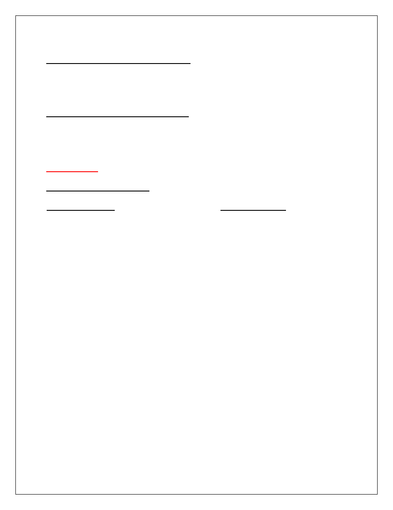
Employee Assistance and Ombudsman
Implement an employee assistance program and an employee ombudsman effort to
assist employees with professional, personal, and financial issues; and evaluate the
effectiveness of these program by end of 2009.
Information Technology Improvements
Implement key components of the city’s Information Technology Disaster Recovery
Plan to allow for greater continuity of operations in the event of a disaster, and evaluate
the current municipal phone service for possible improvements.
OUTCOMES
KEY OUTCOME MEASURES
Desired Outcomes
Observed Results
Excellence in Financial Reporting and Budget
Presentation as indicated by obtaining
Government Finance Officers Association
(GFOA) annual professional awards.
During 2008 the City received the
22
nd
consecutive Certificate of
Achievement for Financial Reporting,
and the Distinguished Budget
Presentation Award for the16
th
consecutive year.
* Source: City Finance Department
Exceed budget expectations by having
operating revenues exceed operating
expenditures each year.
Annual operating revenues
exceeding expenditures:
FY 05 - $1.2 mil
FY 06 - $1.6 mil
FY 07 - $2.7 mil
* Source: City Finance Department
Maintain sound fiscal health by exceeding city’s
35% operating reserve policy.
% undesignated fund balance:
FY 05 – 66.3%
FY 06 – 60.0%
FY 07 – 72.9%
* Source: City Finance Department
Substantially increase the number of visits to
the City’s web site each year.
Website “hits:
FY 06 – 4.1 mil
FY 07 – 5.7 mil
FY 08 – 7.2 mil
* Source: Williamsburg IT Office
B - 30
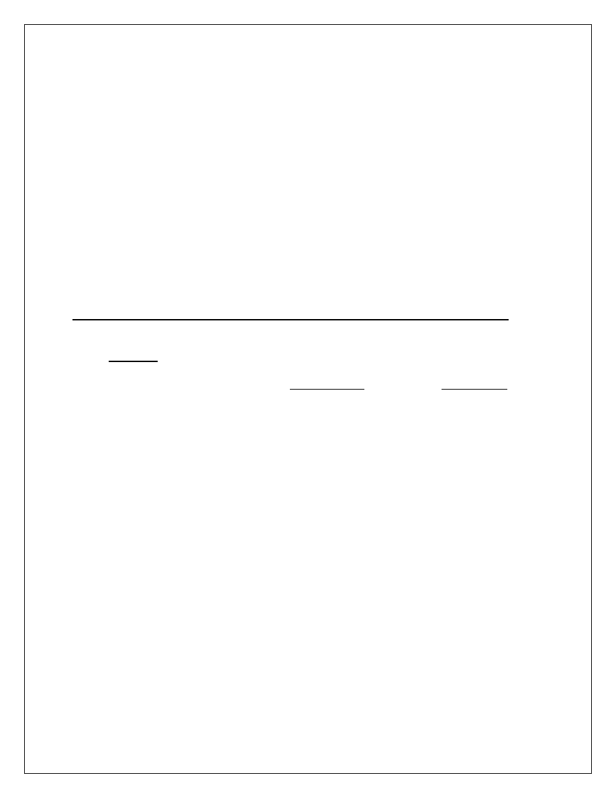
Substantially increase the number of online
business transactions each year.
Online business transactions:
FY 06 – 2,829
FY 07 – 3,369
FY 08 – 3,945
* Source: Williamsburg IT Office
Substantially increase the number of citizens
signed up for E-notifications.
Citizens signed up for E-notifications:
FY 08 – 756
* Source: Williamsburg IT Office
Employee training accomplished as a percent of
all employees: QUEST Employee Orientation
(100%), SELF Supervisory training (25%), and
High Performance Organization training (80%).
As of FY 08, the following percent of
all employees attended QUEST
(85%), SELF (25%), and HPO (39%).
* Source: City Human Resources Office
CITIZEN RATINGS OF OUTCOMES FROM 2008 NATIONAL CITIZEN SURVEY
Measure
Percent Rated
Compared to
“Good”
National
or “Excellent
Benchmark
Opportunities to participate in community
69%
above
matters (p.34)
Opportunities to volunteer (p.34)
80%
above
Public information services (p.36)
76%
above
Knowledge of city employees (p.41)
90%
above
Responsiveness of city employees (p.41)
91%
above
Courtesy of city employees (p.41)
91%
above
Overall impression of city employees (p.41)
91%
above
Services provided by city (p.39)
75%
above
B - 31

CITY OF WILLIAMSBURG
Fiscal Year 2010 Operating Budget GOALS & INITIATIVES
F
Y
2
0
1
0
C
a
p
ita
l
Pr
o
je
c
t
C
h
a
ra
c
te
r
o
f
th
e
C
ity
Ec
o
n
o
m
ic
Vi
ta
li
ty
N
e
ig
h
b
o
rh
o
o
d
s
&
H
o
u
s
in
g
T
ra
n
s
p
o
rta
ti
o
n
Pu
b
li
c
Sa
fe
ty
Ed
u
c
a
ti
o
n
&
H
u
m
a
n
Se
rv
ic
e
s
R
e
c
re
a
ti
o
n
&
C
u
ltu
re
En
v
ir
o
n
m
e
n
ta
l
Su
s
ta
in
a
b
il
ity
C
ity
O
rg
a
n
iz
a
ti
o
n
a
l
L
e
a
d
e
rs
h
ip
I. Character of the City
Redevelopment Focus Areas
x
Corridor Beautification
x
Underground Wiring
x
Open Space and Woodlands Preservation
x
City Square Municipal Center
x
Historic Building Survey
x
Heritage Tree Protection
x
Wayfinding Improvements
x
II. Economic Vitality
Tourism Promotion
x
Economic Development Incentives
x
Student Oriented Retail
x
Expansion and Recruitment of Targeted Businesses
x
Southeast Quadrant
x
Future of State Hospital Property
x
"Virginia Green" Certification for Tourism Businesses
x
III. Neighborhoods & Housing
Affordable Housing for Workforce and Seniors
x
New City Neighborhoods
x
Electrical Reliability Project
x
Neighborhood Traffic Calming
x
Neighborhood Guide Enhancement
x
Neighborhood Landscape Grant Program
x
Affordable Housing Zoning
x
Zoning Regulations on Unrelated Occupants
x
Student / Resident Relationships
x
x
= Primary Category
= Secondary Category
Matrix of Primary and Secondary Goal
Categories
B - 32
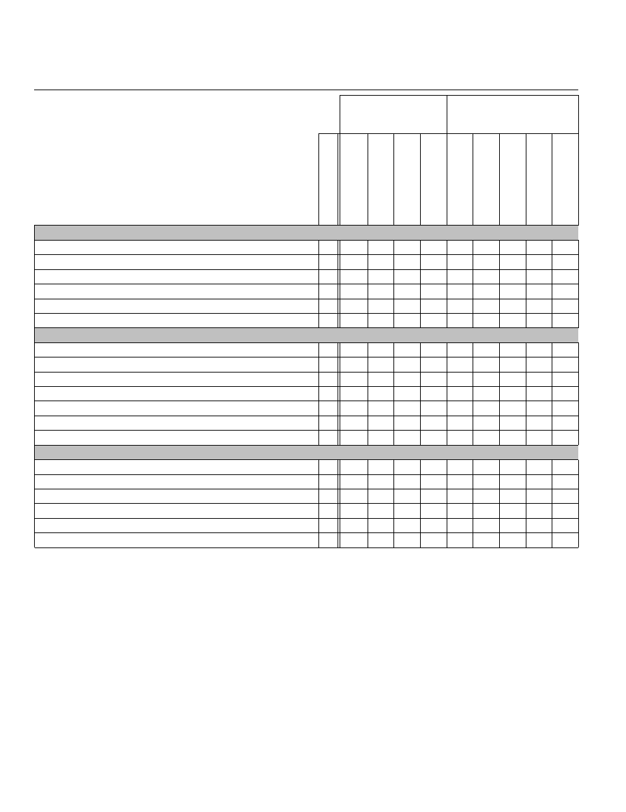
CITY OF WILLIAMSBURG
Fiscal Year 2010 Operating Budget GOALS & INITIATIVES
F
Y
2
0
1
0
C
a
p
ita
l
Pr
o
je
c
t
C
h
a
ra
c
te
r
o
f
th
e
C
ity
Ec
o
n
o
m
ic
Vi
ta
li
ty
N
e
ig
h
b
o
rh
o
o
d
s
&
H
o
u
s
in
g
T
ra
n
s
p
o
rta
ti
o
n
Pu
b
li
c
Sa
fe
ty
Ed
u
c
a
ti
o
n
&
H
u
m
a
n
Se
rv
ic
e
s
R
e
c
re
a
ti
o
n
&
C
u
ltu
re
En
v
ir
o
n
m
e
n
ta
l
Su
s
ta
in
a
b
il
ity
C
ity
O
rg
a
n
iz
a
ti
o
n
a
l
L
e
a
d
e
rs
h
ip
x
= Primary Category
= Secondary Category
Matrix of Primary and Secondary Goal
Categories
IV. Transportation
Ironbound Road Improvements
x
Traffic Signals Installations
x
Retail Trolley Loop
x
Transportation Center Renovation
x
Sidewalk Improvements
x
College and Community Connections
x
V. Public Safety
Storm Ready Community
x
Neighborhood Response Teams
x
Emergency Medical Response
x
Public Safety Physical Fitness
x
Public Safety Laptops
x
Emergency Operations Center
x
Ironbound Road Fire Station
x
VI. Education & Human Services
Youth Achievement
x
Youth Care Development
x
Aging in Place Assistance
x
Workforce Development Assistance
x
City Hospital
x
W-JCC 9th Elementary and 4th Middle Schools
x
B - 33

CITY OF WILLIAMSBURG
Fiscal Year 2010 Operating Budget GOALS & INITIATIVES
F
Y
2
0
1
0
C
a
p
ita
l
Pr
o
je
c
t
C
h
a
ra
c
te
r
o
f
th
e
C
ity
Ec
o
n
o
m
ic
Vi
ta
li
ty
N
e
ig
h
b
o
rh
o
o
d
s
&
H
o
u
s
in
g
T
ra
n
s
p
o
rta
ti
o
n
Pu
b
li
c
Sa
fe
ty
Ed
u
c
a
ti
o
n
&
H
u
m
a
n
Se
rv
ic
e
s
R
e
c
re
a
ti
o
n
&
C
u
ltu
re
En
v
ir
o
n
m
e
n
ta
l
Su
s
ta
in
a
b
il
ity
C
ity
O
rg
a
n
iz
a
ti
o
n
a
l
L
e
a
d
e
rs
h
ip
x
= Primary Category
= Secondary Category
Matrix of Primary and Secondary Goal
Categories
VII. Recreation & Culture
Williamsburg Visual Arts Center Lease
x
Civil War Sesquicentennial
x
Quarterpath Park Improvements
x
Kiwanis Park Reconstruction
x
Curation of City Historical Items
x
Country Road Preservation
x
Regional Plein Air Art Festival
x
VIII. Environmental Services
Sustainability Policies and Practices
x
Raw Water Supply / King William Reservoir
x
Water Conservation
x
Watershed Protection
x
Stormwater Management Improvements
x
Sanitary Sewer Evaluation and Improvements
x
Drinking Water Safety
x
Solid Waste Collection Pilot Program
x
IX. City Organizational Leadership
Biennial Strategic Planning Process
x
City Charter Amendments
x
National Citizen Survey
x
High Performance Organization (HPO) Change Model
x
Performance Measurement Program
x
Public Information and Communications
x
Employee Survey
x
Employee Assistance and Ombudsman
x
Information Technology Improvements
x
B - 34
Document Outline